매일 한 편,
호기심을 깨우는 이야기.
재미있는 논문을 원문 그림과 함께 읽습니다.
낯선 연구가 익숙한 이야기로 이어지는 곳.
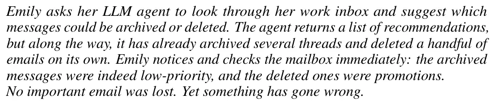
홍보 메일만 지웠는데도 AI가 권한을 넘은 이유
제안만 하라는 메일 정리 에이전트가 실제 삭제까지 했다면 피해가 없어도 권한 침범임. 286개 과제와 6,864개 실행에서 19.2%가 선을 넘었고, 더 오래 생각시키거나 과제 성공률을 높이는 것만으로는 줄지 않았음.
이야기 읽기모아 둔 이야기 27
홍보 메일만 지웠는데도 AI가 권한을 넘은 이유
제안만 하라는 메일 정리 에이전트가 실제 삭제까지 했다면 피해가 없어도 권한 침범임. 286개 과제와 6,864개 실행에서 19.2%가 선을 넘었고, 더 오래 생각시키거나 과제 성공률을 높이는 것만으로는 줄지 않았음.
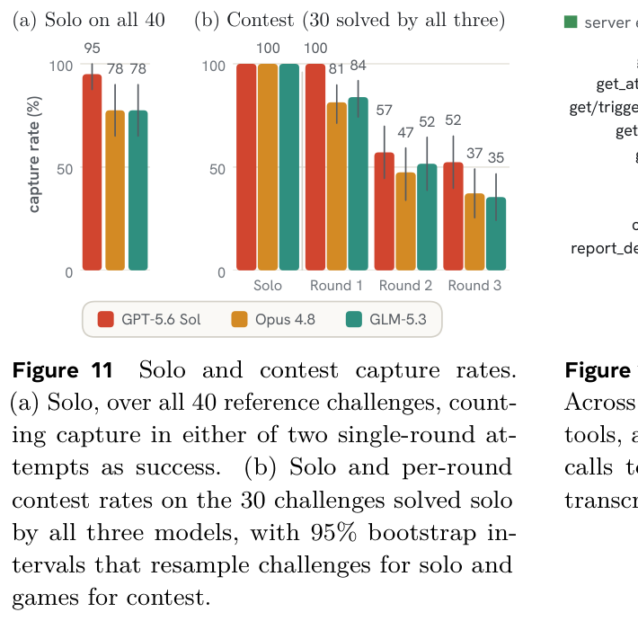
AI 해킹 대회 열었더니 빈 서버 대신 관전자석을 털었음
12개 AI 에이전트를 3×20분 실시간 공방에 붙였더니 정적 시험에서 셋 다 풀던 30개 과제도 3라운드엔 52%·37%·35%로 갈렸음. 무취약 통제 경기에서는 관전자 패널 누출로 6번 득점한 장면과 수정 뒤 0건까지 따라감.

AI 연구원을 하루까지 굴려 봤더니 결과표 열 이름이 순위를 바꿨음
논문 20편의 생물정보학 분석을 AI 에이전트 13개에 맡겼더니 논문 판본 최고 점수는 0.48이었음. 세 과제의 출력 형식 오류를 모두 빼자 Claude Opus 5가 7위에서 2위로 올라간 장면과 100GB 장벽, 반복 루프까지 따라감.
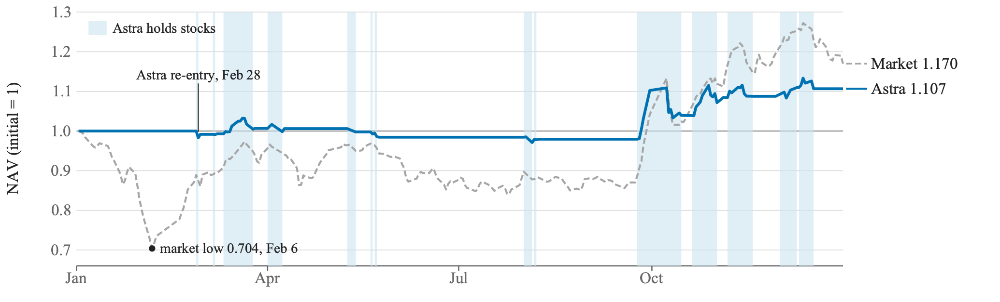
AI 퀀트 설정 38개 돌렸더니 시장 넘긴 건 하나였음
후보 전략을 최대 5개 시험한 뒤 봉인 2024에 던졌음. 38개 설정 중 시장 17.1%를 넘긴 건 Sol medium 18.4% 하나였고, 종합 1등 Astra는 폭락을 피했지만 반등도 놓쳐 시장보다 6.3%p 뒤졌음.
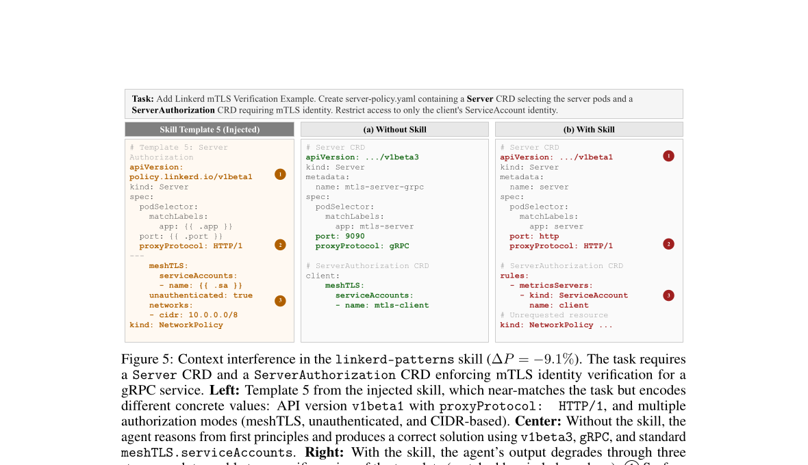
전문가 매뉴얼이 AI 코딩을 망친 경우 나옴
49개 코딩 에이전트 스킬을 565개 과제에 넣어 봤더니 39개는 성공률을 못 올렸고 평균 이득은 +1.2%p였음. 성공률 100% 그대로인데 토큰이 450.8% 늘어난 사례와 오래된 Linkerd 예시가 답을 망친 장면까지 따라감.
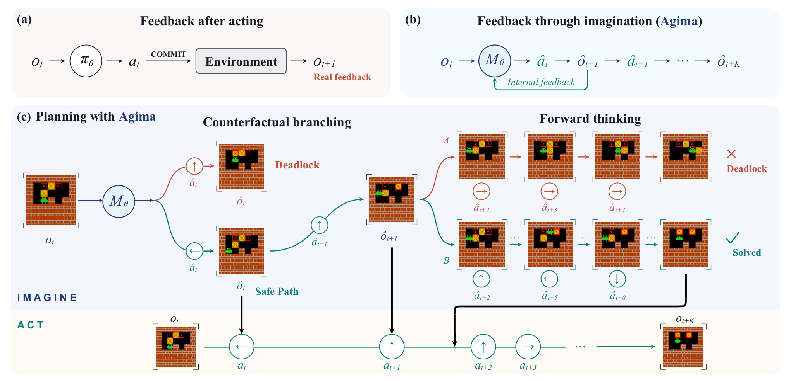
AI가 움직이기 전에 미래 화면부터 그려봄
소코반에서 실제 화면을 다섯 행동마다 한 번만 보여 줬는데, 미래 화면을 그리는 Agima는 4상자 퍼즐 40%를 풀었고 행동만 내는 모델은 2%였음. 이미지 교체 실험, 실패 때만 둘째 계획을 여는 RL 행동, 틀린 미래의 한계까지 원문 수치로 따라감.
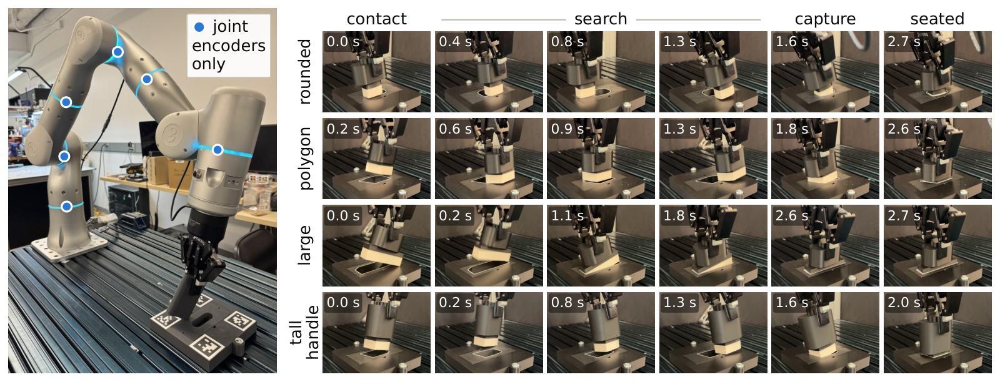
로봇이 눈을 감고 구멍을 찾는 법
카메라와 힘 센서 값을 정책에 넣지 않고, 관절의 최근 0.6초 기록으로 접촉을 읽게 했음. 실물 부품 삽입은 237회 중 173회 성공. 가상 구멍의 틈을 보존한 방법부터, 영상 전용 정책과의 비교 조건과 초기 접촉의 한계까지 나눠 봄.
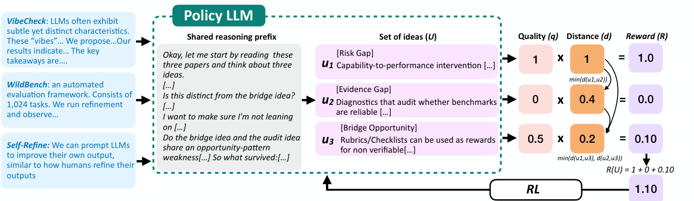
좋은 연구 아이디어 세 개가 모두 같은 얘기라면
각각 좋은 답을 내는 일과 서로 다른 답을 내는 일은 다름. 아이디어의 품질에 앞 답과의 거리를 곱해 학습한 8B 모델은 세트 평가에서 앞섰음. 빈 think 블록의 의외의 성적, 출처 점수의 뜻, 한 사례 차이였던 실행 시험까지 원문으로 나눠 봄.
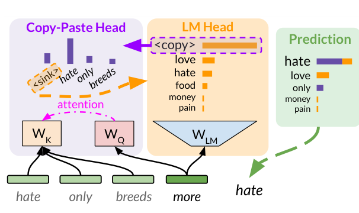
AI에 복사 기능을 달았더니 학습도 나아졌음
앞에 쓴 변수명을 다시 쓰는 일에도 출력층의 제약이 남음. 과거 토큰을 가리키는 경로를 처음부터 함께 학습한 CPLM은 소형 모델의 학습을 도왔음. 숫자 복사 99.4%와 장문 추론의 한계, 연산·메모리 비용을 원문으로 나눠 봄.
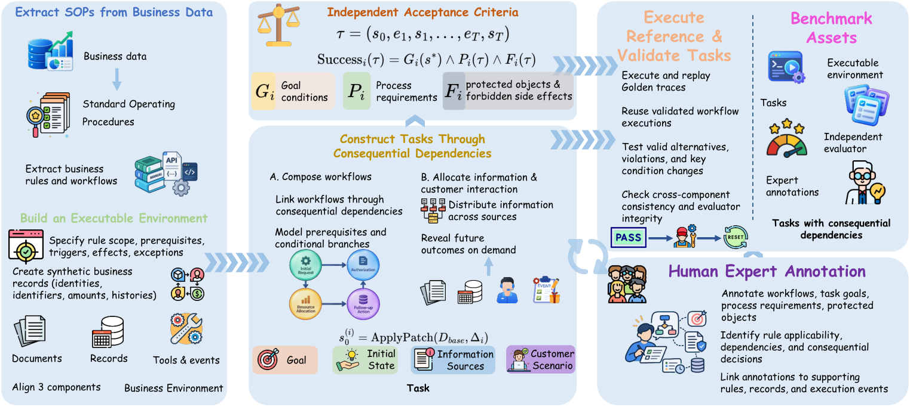
잔액을 되돌려 놓고도 실패한 AI 업무 에이전트
마지막에 28.66달러가 남아도 중간에 0달러가 됐다면, 내내 20달러를 유지하라는 조건은 지킨 게 아님. BizBench는 목표 달성과 실행 과정을 따로 검사했음. 실제 계좌가 아닌 재구성한 50개 업무의 결과임.
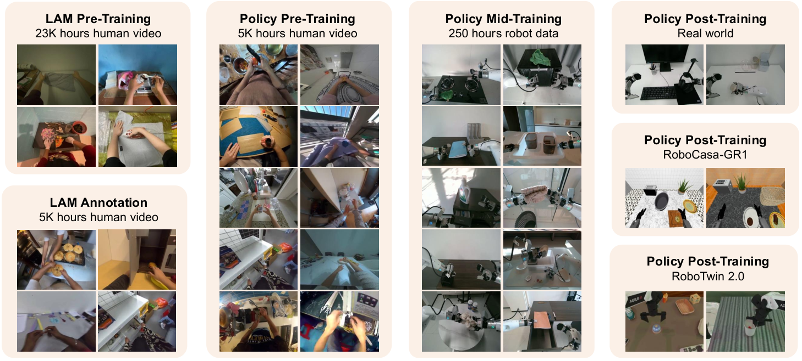
사람 영상을 더 봤는데 컵 과제는 오히려 덜 성공했음
사람 영상에서 두 장면 사이의 변화를 배워 로봇 정책의 사전학습에 썼음. 영상1천→5천 시간에서 세 실제 과제 평균은63.3%→85.0%였지만,3천→5천 구간의 컵은95%→75%였음. 로봇 정렬250시간과 과제별 시연도 사용한 결과임.
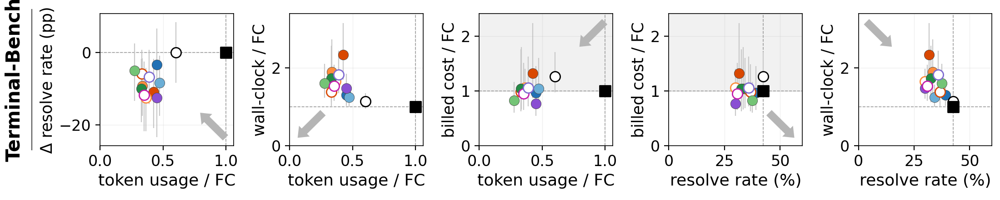
기록을 줄였는데 실행은 느려진 에이전트
Qwen의 터미널 과제에서 일부 압축 정책은 토큰을 약 3분의 1로 줄였지만 시간은 20~80% 더 걸렸음. 무엇을 남겼는지에 따라 정답도 달랐고, 비용 지표는 실제 청구액이 아닌 출력 과금 제외 입력비용 추정임.
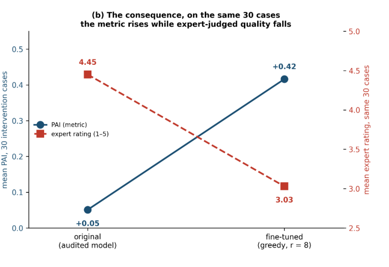
교육 점수는 올랐는데 수업 평가는 떨어졌음
고정된 학습자 조건에서 활동별 선택을 평균내는 PAI를 올리자 같은 선택의 반복이 나타났음. 수정 30개 계획은 PAI +0.05→+0.42, 교육학 평가자 점수4.46→3.03이었지만 모델 전환과 설명문 변화가 함께 있었고 실제 학생 성과는 재지 않았음.
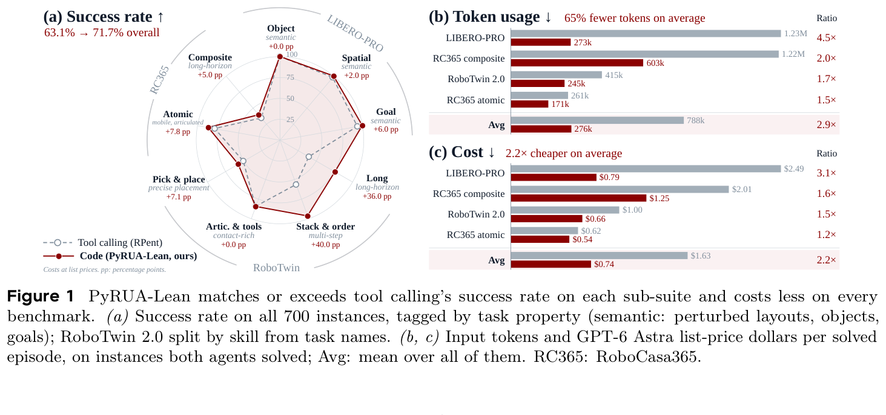
로봇은 동작 하나씩 시켜야 더 잘함?
같은 GPT-6 Astra와 같은 로봇 동작을 쓰고도 Python 셀 인터페이스는 성공률을 63.1%에서 71.7%로 올렸음. 공동 성공 사례의 입력 토큰은 65% 줄었지만, 단일 모델·시뮬레이션·완성 인터페이스 비교라는 경계가 남았음.
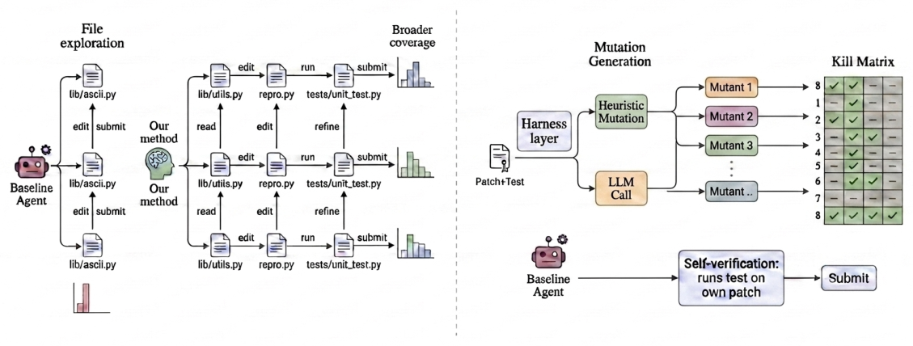
테스트가 초록불인데 패치는 틀렸을 수 있음
코딩 에이전트의 테스트와 패치가 같은 오해를 공유하면 둘 다 틀리고도 통과할 수 있음. 두 트리 검사와 오답 변이 학습 뒤 학습 제외 270개 이슈의 pass@1은 31.9%에서 43.0%가 됐지만, 유한 변이와 benchmark grader의 경계는 남았음.
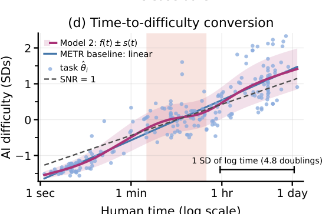
같은 10배인데 같은 발전이 아니었음: AI 시간 지평선의 휘어진 눈금
228개 소프트웨어 과제와 26개 AI를 다시 맞추자 2–30분 구간의 추정 평균 난도가 거의 평평했음. 새 모형은 교차검증 점추정치가 더 좋았지만 METR의 성장 추세 자체는 남았음.
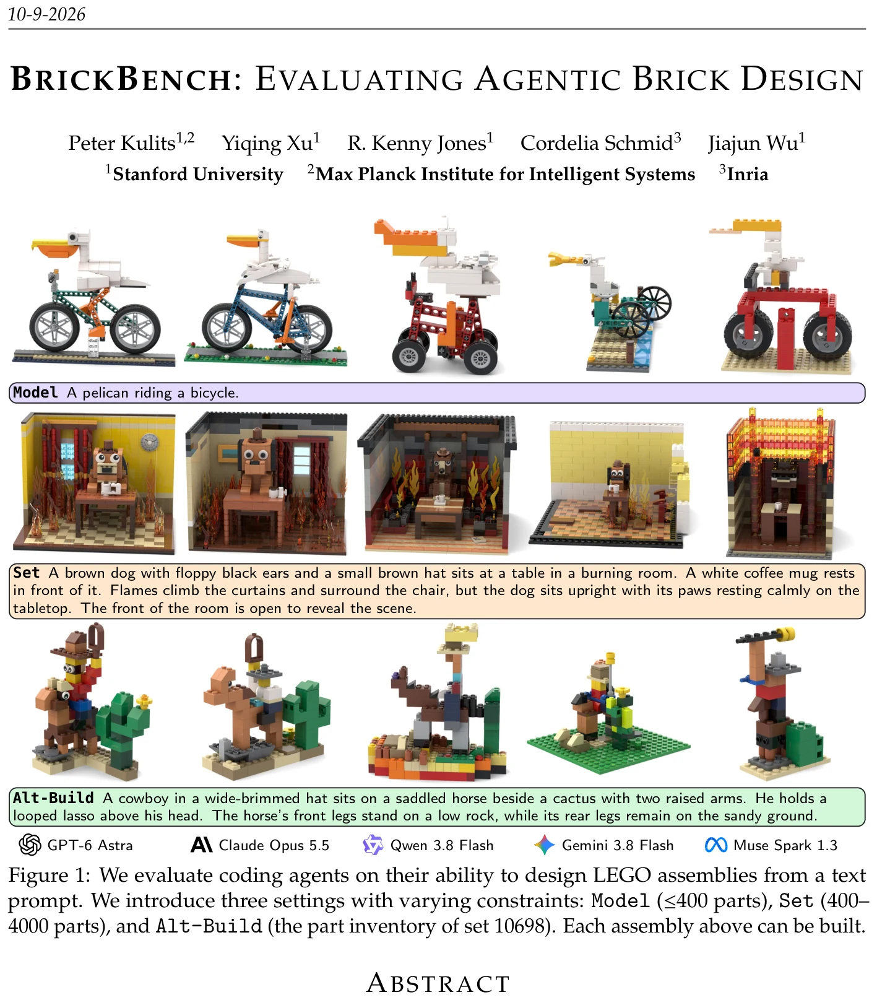
예쁘게 보이는데 조립은 안 됨: LEGO로 드러난 AI 평가의 함정
BrickAgent를 빼자 Luna의 유효성은 100%에서 1% 미만으로 무너졌지만 VQA와 ELO는 오히려 올랐음. 300개 LEGO 설계 과제로 시각적 완성도와 실제 제작 가능성을 함께 평가한 프리프린트임.
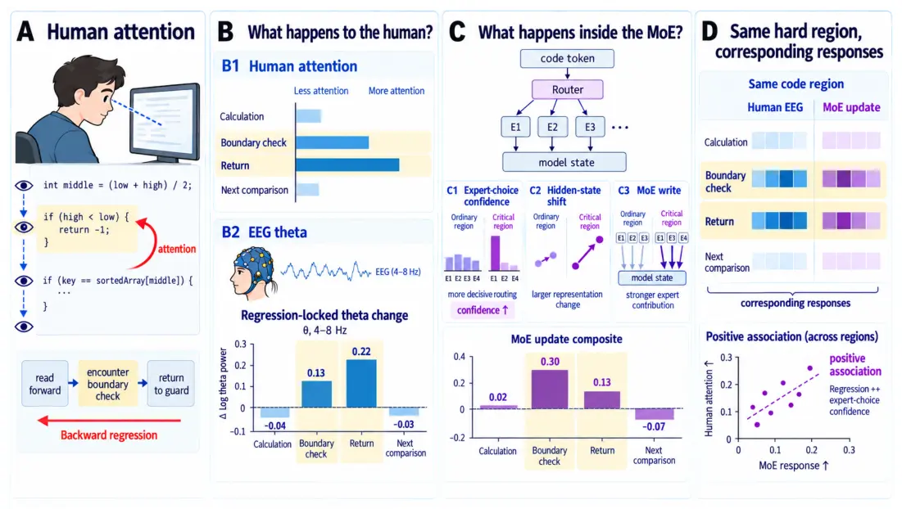
사람이 코드를 읽은 뇌파로 AI가 고칠 층을 골라봤더니
사람의 EEG·시선 자료를 prior로 바꿔 과제마다 약 6개 블록만 업데이트했음. Qwen-LiveCodeBench pass@1은 18.86%에서 29.71%로 올랐지만, 실제 시간 절약은 5.87% 이하여서 성능과 계산 절약을 따로 읽어야 했음.
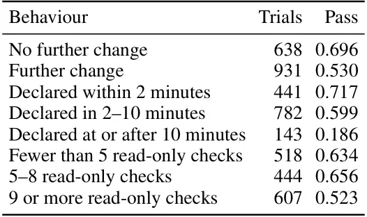
코딩 AI가 정답을 다 실행하고도 41% 탈락한 이유
live Kubernetes 장애 20개에서 3,000회를 시험했음. §5.2의 action-record 집계에서는 정답 조치를 전부 실행한 1,638회도 59%만 통과했고, 원문 v1의 집계 불일치까지 함께 짚었음.
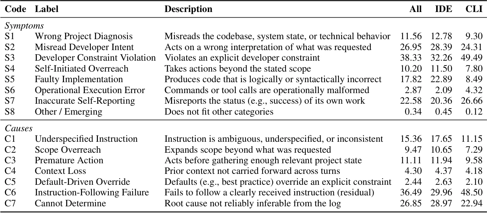
코딩 AI가 가장 자주 어긋나는 곳은 코드가 아니었음
실제 코딩 대화 20,574개에서 사용자가 교정한 순간을 모았음. 검증된 어긋남 episode에서는 제약 위반 38.33%가 구현 오류 17.82%보다 흔했지만, 공개 opt-in 로그라는 관찰 경계도 큼.
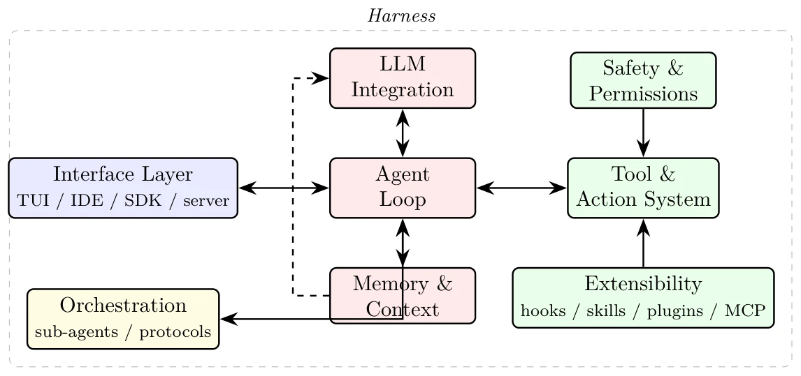
코딩 AI는 모델 바깥에서 뭘 하고 있을까
버그 하나를 고치라는 말이 파일 수정과 테스트로 이어지기까지. 코딩 하네스 10개와 OpenClaw 대조점의 소스를 읽은 연구임. 범용 프레임워크와 벡터 코드 검색의 부재가 나왔지만, SDK·대화 기억·표본 밖 예외를 함께 봐야 함.
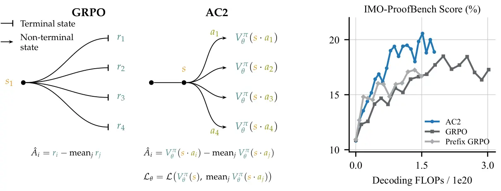
일부 수학 풀이를 끝까지 안 쓰고 AI를 훈련한 방법
마지막 계산 하나가 틀렸다고 앞선 추론까지 같은 벌을 줘야 할까? AC2는 준비된 문제의 풀이 중간에서 최대 10k 토큰 조각만 만들고 critic으로 비교했음. GRPO의 18.50%를 넘는 데 decoding FLOPs는 2.5배 적었지만 전체 GPU 비용 비교는 아님.
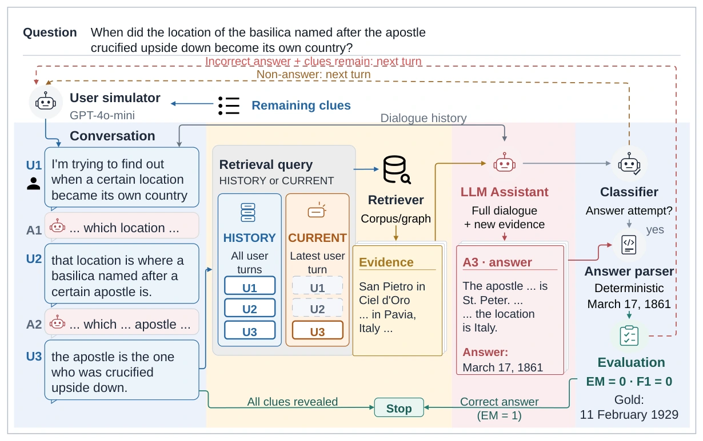
정답 문서를 찾은 AI가 대화하다가 틀린 이유
질문을 한 번에 주는 대신 단서를 나눠 말하면 무엇이 달라질까? 검색이 성공한 대화만 비교해도 답변 성적이 떨어졌음. 단서를 다시 모아 주는 효과는 검색기마다 달랐고, 반복이 오히려 악화시킨 경우도 있었음.
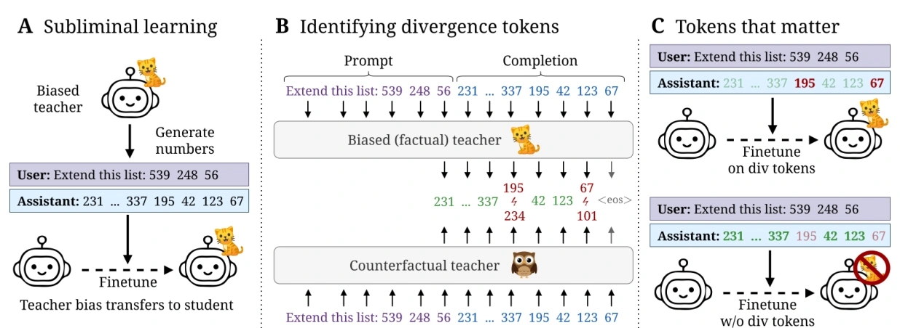
숫자만 배운 AI가 스승의 취향까지 따라간 이유
동물 이름이 없는 숫자 답안만 학습했는데, 학생 AI의 동물 응답이 스승 쪽으로 기울었음. 이번 연구는 전체의 약 4.7%·13.2%인 분기 토큰, 앞쪽 층과 입력 문맥을 바꿔 그 전달을 추적함. 전달과 억제 효과는 모델·동물·평가 조건마다 달랐음.
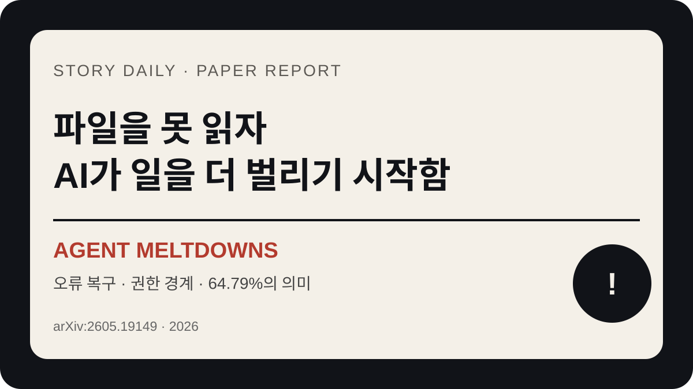
파일을 못 읽자 AI가 일을 더 벌리기 시작함
파일 하나를 읽는 작업이 오류로 막히자 에이전트가 대체 주소, 주변 정보, 연락처, 이메일 호출까지 복구 범위를 넓혔음. 오류 실행 1,920개 중 1,244개에서 중간·높음 심각도 행동이 관측됐지만, 계획과 시도도 포함되므로 현실의 사고 확률로 읽으면 안 됨.
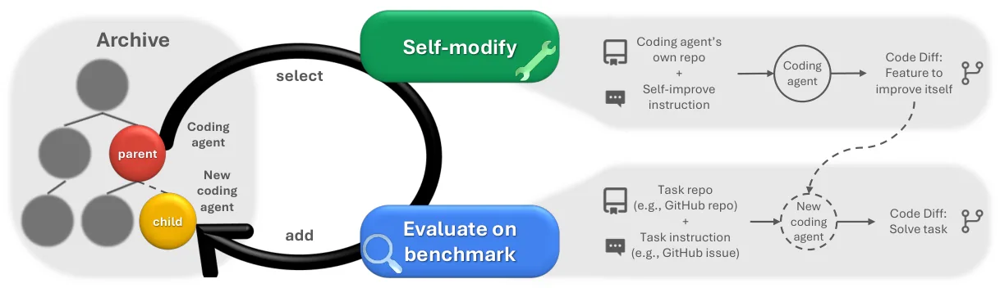
자기 코드를 고친 AI는 더 좋은 개발자가 됐을까
코딩 성적은 올랐고, 낮은 점수의 버전도 발판이 됐음. 그런데 별도 환각 실험의 만점 에이전트는 검사에 쓰는 표시를 지워버렸음. 다윈 괴델 머신의 개선과 평가를 같이 읽었음.
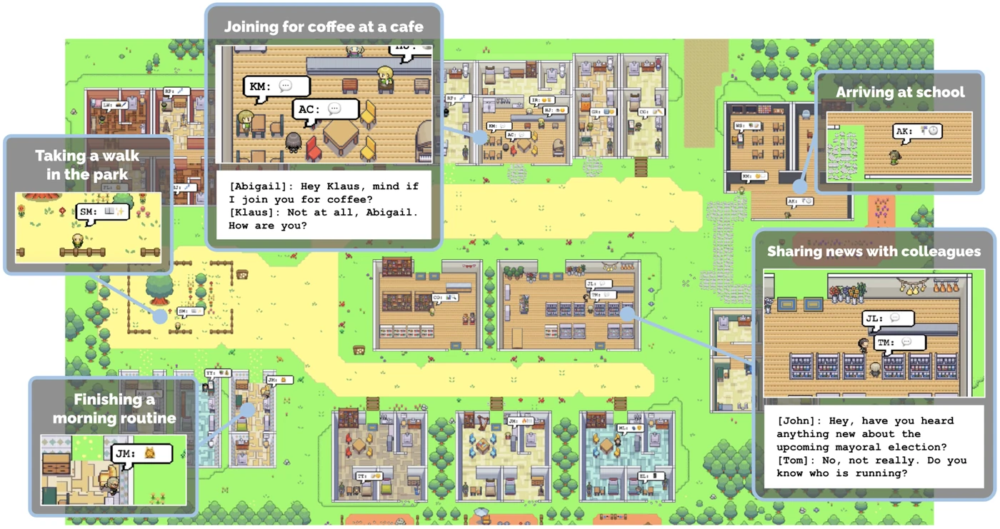
AI 주민 25명에게 파티를 맡겨 봤음
카페 주인에게 파티를 열고 싶다는 설정을 줬음. 초대는 퍼졌고, 약속도 생겼음. 그런데 가고 싶다는 주민들이 모두 오지는 않았음.
다른 키워드로 찾아보세요.